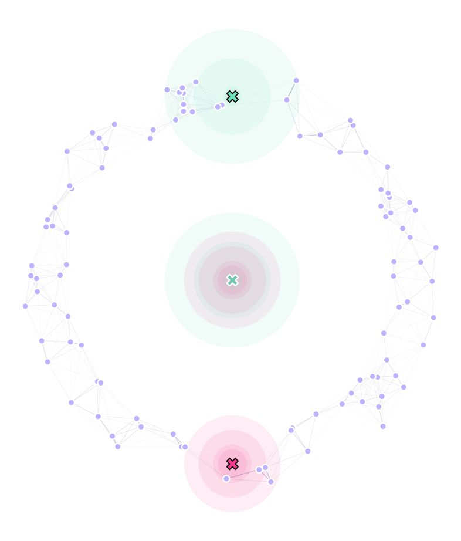
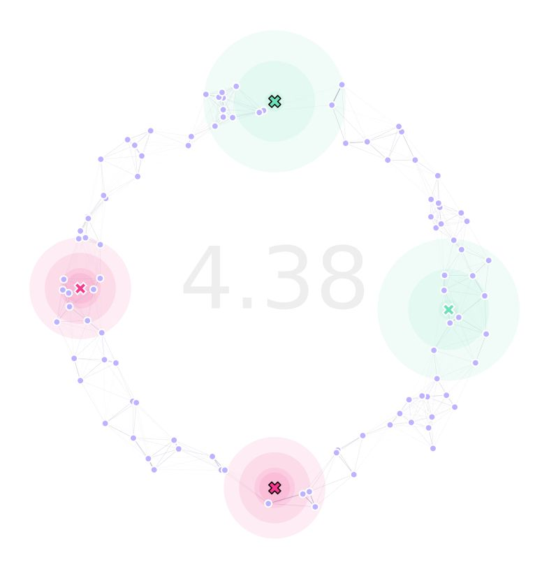

6. GA with Immovable Traps
The combination of MGSurvE and DEAP makes it easy to extend GA functions to accommodate specific needs. In this tutorial, we will show how to use custom functions to optimize landscapes with immovable traps with different attractiveness levels.
6.1. Setting Traps Up
In this example, we will use two types of traps: one with high trapping efficacy but short radius (0), and one with lower trapping efficacy but wider radius (1):
tKer = {
0: {'kernel': srv.exponentialDecay, 'params': {'A': .5, 'b': .1}},
1: {'kernel': srv.exponentialDecay, 'params': {'A': .25, 'b': .05}}
}
To define our traps in the landscape, we setup all the movable traps in (0,0) (just for convenience), and we will assume we need one trap located at the top of our ring environment (0,87.5), and one on the bottom (0,-87.5) (both of which are immovable):
traps = pd.DataFrame({
'x': [0, 0, 0, 0],
'y': [0, 0, -87.5, 87.5],
't': [0, 1, 0, 1],
'f': [0, 0, 1, 1]
})
Our landscape now looks like this:
Where the traps with outlined X marks, are immovable.
6.2. Built-in Custom Functions
Now, if we used DEAP’s built-in creation, mutation, and crossover functions, all the traps would be moved to find the optimum traps’ distribution.
As we want two of our traps to stay fixed in their positions, we are going to have to use different operators for these processes.
Fortunately, MGSurvE provides functions to do this: initChromosome, cxBlend, mutateChromosome; which are based on DEAP’s original ones.
Taking a peek at MGSurvE’s mutateChromosome’s definition, we can see that it uses a “mask” to cover for the traps that are not going to be moved for optimization:
def mutateChromosome(
chromosome, fixedTrapsMask,
randFun=rand.normal,
randArgs={'loc': 0, 'scale': 0.1}
):
randDraw = randFun(size=len(chromosome), **randArgs)
randMsk = randDraw * fixedTrapsMask
chromosome[:] = chromosome + randMsk
return (chromosome, )
With initChromosome and cxBlend having similar extensions for this case.
6.3. Registering GA
To do our optimization, we will follow the previous example’s structure, but with some minor modifications.
The first one is to define our trpMsk that will be needed for our custom functions (as previously mentioned):
lnd = srv.Landscape(
points, kernelParams=mKer,
traps=traps, trapsKernels=tKer
)
bbox = lnd.getBoundingBox()
trpMsk = srv.genFixedTrapsMask(lnd.trapsFixed)
With this mask in place, we can register our custom functions for use in the GA:
toolbox.register(
"initChromosome", srv.initChromosome,
trapsCoords=lndGA.trapsCoords,
fixedTrapsMask=trpMsk, coordsRange=bbox
)
toolbox.register(
"mate", srv.cxBlend,
fixedTrapsMask=trpMsk, alpha=MAT['mate']
)
toolbox.register(
"mutate", srv.mutateChromosome,
fixedTrapsMask=trpMsk,
randArgs={'loc': MUT['mean'], 'scale': MUT['sd']}
)
And that’s it. We can use all the predefined functions for selection and stats as we did before.
6.4. Optimize GA
With this in place, we can use the same workflow as we did in our previous example.
(pop, logbook) = algorithms.eaSimple(
pop, toolbox, cxpb=MAT['cxpb'], mutpb=MUT['mutpb'], ngen=GENS,
stats=stats, halloffame=hof, verbose=VERBOSE
)
6.5. Results
After running our landscape optimization, our landscape looks like this:
Which kept the two traps as immovable in their place. We can verify this by inspecting lndGA.trapsCoords:
array([
[-64.97048981, -16.77172602],
[ 89.41336563, 54.49760029],
[ 0. , -87.5 ],
[ 0. , 87.5 ]
])
The code used for this tutorial can be found in this link, with the simplified version available here.